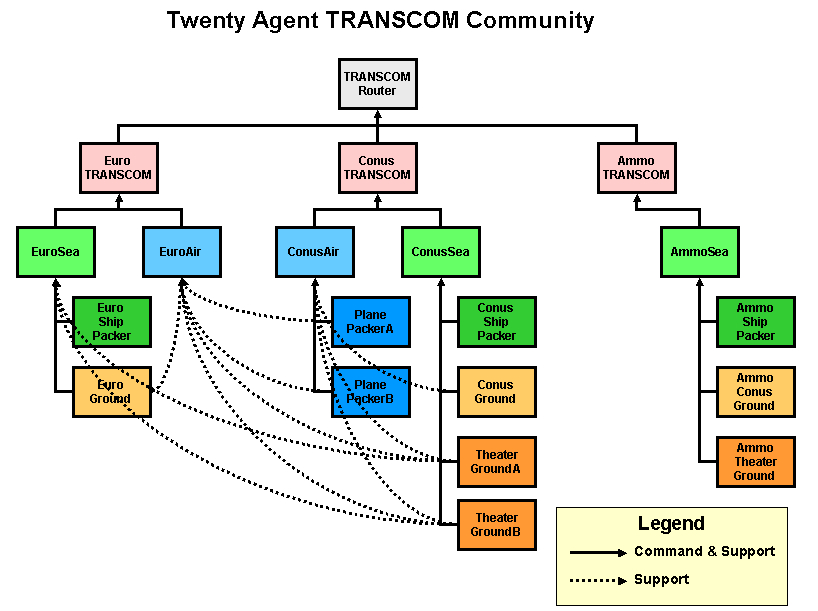

GLMTrans Documentation
Gordon Vidaver (gvidaver@bbn.com
, 617 873 3558)
October 15th, 2004
GLMTrans is a small transportation society for Ultralog that is
meant to
replace the TOPS society from the ALPINE/
Cougaar project. It is a lower
fidelity system with a much smaller footprint in terms of memory,
runtime, and classfiles. Other requirements include very high
reliability and repeatability, in addition to high performance. It
should be simple and easy to understand, and reuse as many basic
components as possible. These will include classes from and
extending those in the Vishnu
(written by Dave Montana,
dmontana@bbn.com ) and Toolkit modules, in addition to the
Sequential Backwards Planning Plugin, which is part of GLMTrans.
Note that there is also an open source web site hosted at BBN
that supports Vishnu .
GLMTrans does Continental US (CONUS) and Europe to theater planning
of
strategic transportation.
This typically involves a ground leg in CONUS/Europe and one in
theater, using
trucks
or railcars, and a sea or air leg in the middle. The tasks come from
various
demand sources, including requests for deployment of unit equipment and
ammunition
supply.
Consult the user's guide for
how to start the society, and how to run the tools that analyze and
visualize the results.
Contents
Packaging
Architecture
Configurations
Seven
agent
Twenty
agent
Separable Problems
Divisible Problems
Hierarchy
Performance Results
Expected Input
Agent Assets
Plugins
TRANSCOM
GlobalSea
GlobalAir
TheaterGround
PlanePacker
ShipPacker
CONUSGround
OSC
Transport Reservations
Parameters
Testing
Adaptivity
Why is
there a performance gain with level 2?
How is
adaptivity triggered?
Performance
Details
Problem Details
Configuration
Details
Packaging
The GLMTrans society lives in the glmtrans module.
Related modules are the datagrabber module, which contains
the datagrabber and the TPFDD Viewer, and the vishnu module,
which contains the reconfigurable scheduler and the related
UltraLog-Vishnu
bridge plugins. The datagrabber is a system that allows a datagrabber
process to gatherer information about a target society (typically
GLMTrans,
or clusters in the demand society performing transportation) and
aggregate
it into one comprehensive, consistent picture. This information is
stored
in a database, which is then available for the TPFDD Viewer to present
this information visually. (See the documentation in the datagrabber
doc directory.)
Note that the vishnu module is for client plugins and related
classes. The vishnu module interacts with the classes in the
vishnuServer jar, which is a separate component developed by BBN.
The vishnu server jar contains the Vishnu Scheduler.
Architecture
The GLMTrans society comes in two configurations : a simple seven agent
society and a higher performance twenty agent society. Each of
the leaf agents is named for the transportation leg it plans : for
example, TheaterGround plans theater transport.
Seven Agent configuration
The entry point to the society is the TRANSCOM cluster. Below
it are the GlobalSea and GlobalAir clusters that
manage the planning of the transportation legs.
Below these clusters are four clusters that schedule tasks against
physical assets : CONUSGround, ShipPacker, PlanePacker, and
TheaterGround.
GlobalSea and GlobalAir receive tasks from TRANSCOM.
GlobalSea sends tasks to CONUSGround, ShipPacker, and
TheaterGround,
whereas GlobalAir sends the middle-step tasks to PlanePacker.
GlobalSea and GlobalAir orchestrate the
sequential
backwards planning process, which constructs the three step
(CONUS-Air/Sea-Theater) transportation sequence from a basic
template. As each leg is planned, the
middle level agents use the information from the preceding leg to
determine the time preference and destination of the dependent
leg. For example, if the theater leg
reports an allocation result specifying a departure from the point of
debarkation (POD) at 10:00 am, this becomes the latest arrival date
expressed in the end time
preference for the sea leg. This guarantees the sequential,
non-overlapping sequence of transportation
legs.
The only scalability achieved in the seven
agent society is done with unique specialized agent types - one agent
per agent type.
Twenty Agent configuration

As the demand society grew to more than 1000 agents, we recognized the
need to add new dimensions of scalability to the transportation
community. Scalability was achieved with common agent types that
share common
functionality
across 2 or 3 agents. There are multiple agents per agent
type.
Separable problems
Where agents could be broken into separable problems, this was
done. In the seven agent configuration, GlobalSea handled ammo
sea requests, whereas in the twenty agent configuration, AmmoSea was
added as an agent dedicated to ammo transportation. The ammo
shipment problem is separable because ammo is transported on ammo-only
shipping and to and from the port groud transport is done by
dedicated ground resources. Similarly for transportation requests from
europe vs CONUS.
Even for the generally separate problems of transporting from CONUS and
europe, planes and theater trucking assets are shared, and this is
represented in the support relationships. For example,
TheaterGroundA supports both EuroAir and ConusAir to move items from
theater airports.
Divisible problems
Some leaf transportation problems could be divided without adverse
affects. The TheaterGround agent was divided into two parts, with the
original agent's trucking assets divided into two sets, one given to
each of TheaterGroundA and B. For example if the seven agent
TheaterGround agent had 60 flatbeds, TheaterGroundA and B each had
30. In this way, two CPUs and two heaps could be applied to the
theater transportation problem. Additional division could also be
done if added performance is desired. An analogous approach
divided the plane resources between PlanePacker A and B in the twenty
agent configuration.
Note that although higher performance is achieved by this division, the
potential downsides are:
- That two agents may not be able to find as good a solution as
just one alone (perhaps two independent agents will schedule two planes
to be half full whereas in the same situation one monolithic agent
would be able to schedule one full plane).
- If the transportation requests are near to the maximum total
capacity, some tasks may fail with two independent agents that would
succeed with one agent. This depends on the size of individual
requests. Consider again the case where two agents each have just two
half full planes remaining. If an indivisible request arrives that
would require one entire plane, neither agent can satisfy the request
and the request will fail. A monolithic agent would have one
completely empty plane remaining and be able to satisfy the request.
In our case, the possibility of using one more plane than necessary was
not as important as higher performance and our problems never required
the last few percent of our capacity.
Twenty Agent Hierarchy
TRANSCOMRouter
ConusTranscom
ConusSea
ConusShipPacker
(Conus-Based Ships)
ConusGround
TheaterGroundA (50% of the
trucks of seven-agent TheaterGround configuration)
TheaterGroundB (50% of the
trucks)
ConusAir
PlanePackerA (50% of the
C-5, C-17 of seven-agent PlanePacker configuration)
PlanePackerB (50% of the
C-5, C-17)
EuroTranscom
EuroSea
EuroShipPacker (Euro-Based
Ships)
EuroGround
EuroAir
AmmoTranscom
AmmoSea
AmmoShipPacker (Ammo
Ships)
AmmoConusGround
AmmoTheaterGround
Notes
- ConusAir selects airports
for air cargo & PAX from Conus
- EuroAir selects airports
for air cargo & PAX from Europe
- PlanePackerA and
PlanePackerB jointly support both ConusAir and EuroAir
- They provide scalability
at the expense of schedule optimality
- More PlanePacker agents
could be added
- TheaterGroundA and
TheaterGroundB jointly support ConusSea, ConusAir, EuroSea and EuroAir
- They provide scalability
at the expense of schedule optimality
- More TheaterGround agents
could be added
- EuroGround supports
EuroAir and EuroSea
- ConusGround supports
ConusAir and ConusSea
Results
The twenty agent configuration enabled results that were well under the
"TPFDD-in-an-hour" requirement.
Twenty agent performance data varied with demand configuration, but a
typical
result was 20 minutes to plan 22000 items and 34000 people.
Expected input
Input tasks are expected to have a few basic pieces of information
attached to them:
- An item, aggregate, or asset group of cargo in the direct object
- A start time preference
- An end time preference. The end time preference may be
structured to have earliest, best, and latest arrival times. This is
preferred but
not required.
- A From geolocation
- A To geolocation
- A For preposition indicating which unit the task originally
comes from.
- Optionally, input tasks may be tagged with a prep "LOW_FIDELITY"
which indicates that the task at Level-2 detail and should be handled
differently from Level-6 tasks.
The input tasks are expected to be labeled with the Transport verb :
|
Task: Verb=Transport
|
|
General description : Transport
tasks are requests on the transportation system to ship some cargo or
transport some group of people from one location to another, starting
no earlier than the departure preference and arriving no later than the
arrival preference.
|
|
No.
|
Attribute
|
Attribute Details
|
Usage
|
|
1
|
DirectObject
|
Asset
|
Represents the asset (item or items or people)
being moved
|
|
2
|
Preference
|
AspectType = START_TIME
ScoringFunction = nearOrAbove
|
The earliest allowed departure time.
|
|
3
|
Preference
|
AspectType = END_TIME
ScoringFunction = VscoringFunction or
nearOrBelow
|
The arrival preference. This can be of two
forms : an earliest, best, and latest arrival window or a no-later-than
latest arrival time.
|
|
4
|
PrepositionalPhrase
|
Preposition = From
IndirectObject = <geoloc where the item is moving from>
|
The starting location of the item.
|
|
5
|
PrepositionalPhrase
|
Preposition = To
IndirectObject = <geoloc where the item is requested to go
to>
|
The requested destination of the cargo item.
|
|
6
|
PrepositionalPhrase
|
Preposition = For
IndirectObject = <String, representing the
owner>
|
The owner of the cargo item.
|
7
|
PrepositionalPhrase
|
Preposition = LOW_FIDELITY
IndirectObject = LOW_FIDELITY
|
A tag that indicates the task is a Level 2
task.
(Optional!)
|
Other tasks generated by GLMTrans include those with a Transit verb:
|
Task: Verb=Transit
|
|
General description : Transit
tasks are tasks which are related to transport tasks but apply only to
the resource being used and not to the task cargo itself. That is,
these are implied tasks that represent, for instance, the fueling of a
truck before, or the maintenance required after doing the main
Transport task.
|
|
No.
|
Attribute
|
Attribute Details
|
Usage
|
|
1
|
DirectObject
|
Asset
|
Represents the asset (item or items or people)
being moved
|
|
2
|
Preference
|
AspectType = START_TIME
ScoringFunction = nearOrAbove
|
The earliest allowed departure time.
|
|
3
|
Preference
|
AspectType = END_TIME
ScoringFunction = VscoringFunction or
nearOrBelow
|
The arrival preference. This defines an
earliest, best, and latest arrival window.
|
|
4
|
PrepositionalPhrase
|
Preposition = From
IndirectObject = <geoloc where the resource is moving
from>
|
The starting/ending location of the resource.
|
|
5
|
PrepositionalPhrase
|
Preposition = To
IndirectObject = <geoloc where the resource is moving to>
|
The starting/ending location of the resource.
|
|
6
|
PrepositionalPhrase
|
Preposition = For
IndirectObject = <String, representing the
owner>
|
The owner of the cargo item.
|
Agent assets
In the following, assets can be populated by either using
the UTILLdmXMLPlugin or the LDMSqlPlugin and XMLPrototypeProviderPlugin.
The option is provided in the ini files. The principle advantage
of the UTILLdmXMLPlugin is that it doesn't require a database
connection.
Transcom
Transcom has only the null asset as a physical asset. It has
GlobalAir and GlobalSea as subordinates.
GlobalAir
CONUSGround, PlanePacker, and TheaterGround as
subordinates.
GlobalSea
CONUSGround, ShipPacker, and TheaterGround as
subordinates.
CONUSGround
34 ton trucks (M872) and 68 ft DODX railcars as assets.
PlanePacker
The plane packer uses
C-17 s and 747
s.
ShipPacker
The ship packer uses two kinds of ships –
Ammo-specific ships and
LMSR ships.
TheaterGround
34 ton trucks (M872)
and HET
s
(capable of carrying tanks and other heavy objects) as assets.
Plugins
Transcom
Transcom has two plugins : GLMTransOneToManyExpanderPlugin
and TranscomVishnuPlugin. The first expander breaks
up unit-sized incoming tasks into individual chunks. These may be
aggregates. The TranscomVishnuPlugin is an extension of
the VishnuAllocatorPlugin (from the Vishnu module) that uses
the Vishnu scheduler to determine whether tasks go by air or sea. If
air, the task is allocated to GlobalAir, if sea, toGlobalSea.
GLMTransOneToManyExpanderPlugin
The GLMTransOneToManyExpanderPlugin has a number of
responsibilities.
- It has to decide
whether to handle a task at level-6, level-2, or "not-now" level of
detail. The plugin compares the requested arrival date of the task
against the level 6 time horizon operating mode and the level-2 time
horizon. If it is before the level-6 horizon, the task is passed
through untouched. If it is between the level-6 and level-2
times, the task will be converted to a level-2 level of detail and
subsequent processing by lower-level GLMTrans agents will get a
performance boost. If the arrival time is after the
level-2 horizon, the task is temporarily ignored. The plugin
remembers to wake up a day later (in cougaar time) and review all
level-2 and not-processed tasks. If under this review, a level-2
task should be replanned at level-6, the planning for the original task
is removed, and the task replanned. Similarly, if the task was
previously ignored, the task may be planned at level-2 or 6, depending
on the current horizon values. Typically, under
stress, the time horizons will be moved closer to now (to the left) so
as
to reduce the amount of work the GLMTrans society will be forced to do.
See
figure below. For further discussion of Adaptivity in the GLMTrans
community,
see here .
Figure 1 : Level-6 and Level-2 Time Horizons and their response
to stresses
- It also has to examine the input task to see if it is already at
a level-2 level of detail. If so, the task passes on through and
is
obviously not examined to see if it should be converted to level-2.
- It has to be sensitive to changes in operating mode, which might
make it reconsider the level-of-detail choices it made for tasks.
- It figures out a ship route for the cargo to travel, and uses
this to make a mode-selection decision. If there is not enough
time for
a ship to travel this distance, plus some time for CONUS and Theater
ground transport, than the item goes by air. This is encoded in
the business rules used by the next plugin.
- It also acts as the "front-door" plugin and so has well-formed
tests applied to incoming tasks. Tests applied to incoming tasks are:
- Departure and Arrival time preferences should make sense - the
ready at, earliest, best, and latest arrival dates should proceed in
order.
- There must be from and to prepositions.
- There must be valid lat/lon info on the from and to
prepositions.
Programming details
The level-2 conversion takes asset groups and aggregates and creates
one Level-2 aggregate per cargo type. For instance, there may be
oversize, outsize, and bulk cargo in a transport task which specifies
an asset
group of cargo as a direct object. These types will be go as
separate Level-2 tasks through the system, and appear so on the TPFDD.
An example of how level-2 assets appear on the TPFDD is :
Figure 2 : TPFDD of Level-2 cargo
Sea routes are calculated from a sea network provided by Ken
Anderson. There is a separate Route Finder component within the
GLMTrans
module that calculates the route.
An example route is (obtained by right-clicking on a cargo instance
in the TPFDD and selecting Display Route) :
Figure 3 : Route calculated by route finder
for a ship route from the Netherlands to Turkey, viewable from TPFDD
Viewer
TranscomVishnuPlugin
This plugin is a Vishnu scheduler client, with it's scheduling
constraints represented in an xml file for TRANSCOM.
These scheduling constraints/business rules are:
- Tasks which would require the a ship to take the route from
source to destination faster than the fastest ship go by air
- Tasks which allow a ship to take the route from source to
destination at a speed slower than the fastest ship go by sea
- People go by air
- Transport tasks whose "from" and "to" locations are the same are
allocated to the null asset in TRANSCOM. This insures that
prepositioned tasks that unload at the theater port and stay there
appear on the TPFDD.
This plugin uses a custom XML processor that converts Cougaar objects
into the
XML
format that the Vishnu scheduling system expects. The types of
objects that are sent to Vishnu are defined in the Transcom.dff.xml
file. For example, here's a snipet of the piece of the Transcom.dff.xml
file that defines a task:
<OBJECTFORMAT name="Transport" is_task="true" is_resource="false"
>
<FIELDFORMAT name="id" datatype="string" is_subobject="false"
is_globalptr="false" is_list="false" is_key="true" />
....
</OBJECTFORMAT>
This says that objects named "Transport" are tasks (is_task="true").
It's first field is named "id" and it is of type "string." (For more
information about the Vishnu object format, click here
.)
The XML Processor that Transcom uses is called TranscomDataXMLize.
It takes tasks and assets and creates XML that looks like
this:
<OBJECT type="Transport">
<FIELD name="id" value="TRANSCOM/996629297256"/>
....
</OBJECT>
which is in the format that Vishnu expects for data. Each of the
four clusters
that allocates tasks to physical assets use custom data xmlizers that
extend
from TranscomDataXMLize.
Note that the of the modes that the Vishnu client can operate in :
client-server, XML-internal, and direct internal, it currently runs in
direct internal mode. This means that tasks and assets are
directly converted from Cougaar objects into Vishnu objects, and Vishnu
scheduling assignments represented as Java objects are directly
translated into Cougaar Aggregations and Allocations.
GlobalAir
GlobalAir has one plugin : SequentialGlobalAirPlugin. The
plugin extends the base class SequentialPlanningPlugin in the
base directory. It manages the different possible templates that a
parent task can be expanded into. These are:
- G, A, T (ground, air, theater) - if the task goes from a place
that is not an airbase and is going to a place that is not an airport
- A, T (air, theater) - if the task goes from an airbase
- A - if the task goes between airbases
- T - if the task just goes from one location in theater to another
The Sequential planner guarantees that the legs will be planned in
sequence as defined by their dependencies. For instance, once the
theater leg is planned, its start time is used as the end time of the
air leg.
The Sequential planned plugin attaches information to incoming tasks to
be
expanded in the form of a schedule as a preposition on the task.
Each
item in the schedule is a SequentialScheduleElement, which represents
the
information and smarts necessary to plan that segment of the sequence.
The
SequentialScheduleElement knows which other elements it depends on, so
that
when all dependencies have been planned, it can be planned. It
has
a method (planMe ()) which knows how to create the subtask for
that
segment of the sequence. The plugin notices when subtasks have
been
planned successfully and scan through the SequentialScheduleElements
looking
for elements that are ready to be planned. If they are planMe
is called on that segment, and the cycle continues until all
segments
have
been planned.
GlobalAir and GlobalSea define subclasses of the
SequentialScheduleElement
for each segment of the move : Theater, Air/Sea, and Ground.
GlobalSea
GlobalSea is almost identical to GlobalAir, except
that ituses SequentialGlobalSeaPlugin,which extends SequentialGlobalAirPlugin
to allocate its middle step to theShipPacker.
CONUSGround, PlanePacker, ShipPacker, TheaterGround
These clusters all use variations on the same plugins : TransportExpanderPlugin,
VishnuAggregatorPlugin, and the TransportAllocatorPlugin.
The VishnuAggregatorPlugin derivatives use different specialized data
xmlizers that add on fields needed for their specific scheduling
problems. The expander breaks up incoming tasks, including aggregatess, into chunks the size of the cluster's carrier
asset> . The aggregator aggregates tasks together and assigns them
to a carrier. The allocator actually makes the allocation of MPTask (multi-parent task) to carrier asset.
CONUSGround
CONUSGround has two specialized plugins, the GroundVishnuPlugin,
a descendant of VishnuAggregatorPlugin and the GroundTransportAllocatorPlugin.
The GroundVishnuPlugin uses the GenericDataXMLize
data xmlizer to send data to Vishnu. The two plugins co-operate
to specially process self-propelled assets. These are not processed
by the GroundVishnuPlugin but are sent straight to the
Allocator. There they are allocated to themselves.
Vishnu
Specs:
Optimization Criterion - Make sure all tasks have assigned
resources. Minimizes the difference between preferred and actual
arrival times. Minimizes setup and wrapup times.
Delta Criterion - Penalizes assignments that use a new resource
at each eval, having the overall effect of using as few trucks as
possible to do the job. Also minimizes the difference between preferred
and
actual arrival times.
Task Duration - fixed 8 hours for rail; for trucks, calculate
the duration using the distance between start and end locations and the
speed of the truck
Setup Duration - fixed 1 hour
WrapupDuration - same as Task Duration. This is the time it taks
the asset to make its return trip.
Resource Unavailable Times - Looks at the resource's role
schedule and makes all entries in the role schedule unavailable
Task Unavailable Times - Task is available only between its
start and end time
PlanePacker
The plane packer uses the GenericVishnuPlugin that extends the
CustomVishnuAggregatorPlugin. It's main purpose is to
redefine the createXMLizer method so that it can make and return the
GenericDataXMLizer object. This object handles the custom
translation specific to aircraft scheduling.
Vishnu Specs:
Optimization Criterion - Make sure all tasks have assigned
resources. Minimizes the difference between preferred and actual
arrival times. Minimizes setup and wrapup times.
Delta Criterion - Penalizes assignments that use a new resource
at each eval, having the overall effect of using as few resources as
possible to do the job. Also minimizes the difference between preferred
and actual arrival times.
Capability Criterion - Assigns people to passenger planes (B747)
and other assets to non-passenger planes
Task Duration - calculate the duration using the distance
between start and end locations and the speed of the plane
Setup Duration - fixed 1 hour
WrapupDuration - fixed 1 hour
Resource Unavailable Times - Looks at the resource's role
schedule and makes all entries in the role schedule unavailable
Task Unavailable Times - Task is available only between its
start and end time
Capacity Contributions - passengers are counted toward the total
passenger capacity of the plane, whereas other assets contribute
according to their weight
Capacity Thresholds - see Capacity Contributions
ShipPacker
The ship packer uses the SeaVishnuPlugin that extends
the CustomVishnuAggregatorPlugin . It's main purpose
is to redefine the createXMLizer method so that it can make and return
the SeaDataXMLizer object. This object handles the
custom
translation specific to ship scheduling.
Vishnu Specs :
Optimization Criterion - Make sure all tasks have assigned
resources. Minimizes the difference between preferred and actual
arrival times. Minimizes setup and wrapup times.
Delta Criterion - Penalizes assignments that use a new resource
at each eval, having the overall effect of using as few resources as
possible to do the job. Also minimizes the difference between preferred
and actual arrival times.
Capability Criterion - Assigns ammo to ammo ships and non-ammo
to other ships
Task Duration - calculate the duration using the distance
between start and end locations and the speed of the ship
Setup Duration - fixed 1 hour
WrapupDuration - same as task duration; represent return journey
of ship
Resource Unavailable Times - Looks at the resource's role
schedule and makes all entries in the role schedule unavailable
Task Unavailable Times - Task is available only between its
start and end time
Capacity Contributions - there are two kinds of capacity on a
ship: slots for containers and area for non-containers. Containers each
contribute to 1 slot of capacity, whereas non-containers contribute
according
to their areas
Capacity Thresholds - see Capacity Contributions
TheaterGround
TheaterGround is exactly like CONUSGround, except that it
has HETs instead of rail cars for assets.
Vishnu
Specs:
See CONUSGround
OSC
Although the OSC agent is not part of the GLMTrans society, it
has some plugins that come from the GLMTrans module.
The AmmoProjectionExpanderPlugin converts incoming Project Supply tasks
into
Transport Reservations.
Figure 4 : Conversion of Project Supply tasks into Transport
Reservations
The plugin takes the Project Supply tasks and creates Transport
Reservations
with milvans as direct objects. The reservations are monthly
deliveries
of the projected quantity of ammunition, divided into month-sized
chunks.
So for instance if a projection spans three months, three
reservations
will be generated. The manifest items inside the milvans are
these
quantities. The AmmoProjectionExpanderPlugin is essentially a
poor-man's
AmmoPacker. It doesn't attempt to do an optimal job of packing
milvans.
Transport Reservations are handled by the GLMTrans community exactly as
normal
transport tasks. Their main difference is semantic - they
represent
reservations of assets for transport use. They will be replaced
by
actual, real transport requests as time progresses. Reservations
mark
specific assets as reserved for future use.
OSC (the AmmoProjectionExpanderPlugin) keeps tracks of overlaps of
actuals
with projections and replans them as necessary. As time moves
forward,
new actuals come in that overlap with existing projections. The
AmmoProjectionExpanderPlugin notices this and rescinds and replans the
Transport Reservation tasks as necessary.
This replanning takes two forms:
- the ready at date of the reservation task is moved forward to
be after
the actual task's arrival.
- the tonnage quantity inside the milvan on the direct object of
the Transport Reservation will be decremented to be consistent with the
time span
of the task. For example, if the original projection was for 10
tons
of C380 every month, there will be transport reservations set to arrive
at
the end of each month with 10 tons. If an actual appears 15 days
into
the month of a transport reservation, the amount delivered in the
milvan will
be 5 tons.
Here's an example of a TPFDD with both reservations and actuals on the
same page for one type of ammunition. Note that the reservations
begin after the actuals end.
Figure 5 : Ammo Transport Reservations and Actuals for C380.
Note that the reservations begin after the actuals end.
(Generated by the TPFDD Viewer looking at a TINY-1AD run and
selecting the TPFDD Filter dialog,
selecting both OSC and 191-ORDBN, clicking
Get Manifest, and
then choosing the first ammo cargo type and clicking
Display TPFDD. )
Parameters
There are really only three parameters that make any difference in the
outcome of runs. These are GA ( click here for an
introduction to Genetic Algorithms ) parameters :
* the number of evaluations (the number of new, randomly generated
solutions) - currently set to 1
* the maximum amount of amount of time the GA is allowed to
spend looking for a solution - currently 5 seconds
* the population size, set to 5
Having the number of evaluations set to 1 means that the GA
does in fact not do any optimization after seeding the population with
greedy solutions. Increasing it to larger than one would mean
introducing random solutions, and beginning to optimize. Increasing any
of the parameters would increase the quality of the solution of any
particular problem
(truck, ship, or plane packing) but would increase run time.
Testing
The main way to do testing of the GLMTrans society independent
of other agents is to use the GLMStimulatorServlet. It can be told to read in any of a number of test input files in
the testinput directory. These files specify different kinds of
input tasks, which test different categories of behavior, covering
topics like handling of air, sea, and non-moving transport requests.
For more on the GLMStimulatorServlet and how to use it, consult the
StimulatorServlet documentation page in the glm/doc directory of the
cougaar distribution, which should
be here .
Also, there is the
AssetStimulator
plugin which provides a gui which allows the developer to introduce
new assets or assets in change an agent with click of a button. This is
helpful when testing plugin responses to dynamic assets. (By default,
it creates a new rail car as a new asset, and changes the type id of
the first physical asset in the cluster to be X_changed, where X is the
original name when changing an asset.)
Adaptivity
GLMTrans adapts to stresses by converting incoming level-6
tasks into level-2 tasks. It does this at the TRANSCOM agent
only. See
discussion in the TRANSCOM agent above . The TRANSCOM agent uses
level-6 and level-2 time horizon operating modes. These modes
define how many days into the future TRANSCOM will process tasks at
level-6, level-2, or not at all. Tasks processed at level-2 or
that are ignored are reexamined when either
- the operating mode values change
- time moves forward a day
When either of these changes occur, TRANSCOM looks through the
blackboard for level-2 and not processed tasks and re-examines them
to see if they should be processed at a higher level of detail. Note
that level-6 tasks are not touched -- no information is ever thrown
away.
Why is the there a
performance win with Level-2?
The performance win for the GLMTrans society comes from the reduced
number of tasks that flow through the society. During level-2
processing of incoming tasks, instead of each task representing the
movement of an individual item, there are Level-2 tasks representing
the movement of a whole unit's deployment cargo as an aggregate.
Per unit, there will be a small number of level-2 tasks, since a
unit's cargo is sorted into homogenous cargo category groups, e.g.
Oversize, Outsize, Bulk, etc.
Having a small number of level-2 tasks per unit greatly reduces the
number of tasks flowing through the society. There is also a
performance win in that the Vishnu schedulers at each of the leaf
agents are being
asked to schedule far fewer tasks. The biggest wins are at the
ShipPacker and PlanePacker, since those agents will be forced to divide
incoming
tasks into the largest chunks, compared to the trucking agents.
(Incoming level-2 tasks are broken into subtasks whose chunk size
is no larger than the size of the smallest carrier asset in the agent.
This is done
by the TransportExpanderPlugin
.) So ships being much larger than trucks, the chunks will be
relatively
much larger, and so there will be far fewer subtasks to schedule.
How is adaptivity
triggered?
There are plays for the TRANSCOM agent that are triggered when the
FallingBehind Condition changes. The playbook for TRANSCOM is simple:
FallingBehind >= 2.0 : Level2TimeHorizon = 60 :
Level6TimeHorizon = 21;
FallingBehind == 1.0 : Level2TimeHorizon = 225 :
Level6TimeHorizon = 40;
FallingBehind <= 0.5 : Level2TimeHorizon = 225 : Level6TimeHorizon =
225;
The condition can come from the either the
FallingBehindConditionServlet or any of several PSU condition servlets.
The TimeHorizon
OperatingModes are published by the TRANSCOM agent and watched
there for changes. They are used in the level-of-detail decision
making process applied to incoming tasks, see above .
Performance
Click here to learn more
about the performance and scalability of GLMTrans in small
configurations.
Twenty agent performance data varied with configuration, but a typical
result was 20 minutes to plan 21000 items and 31500 people.
Details
Problem details -- there are a number of
business rules that GLMTrans uses:
- Tasks which begin at an airport or seaport do not have CONUS
ground legs. Similarly tasks which end at an airport or seaport have no
theater leg.
- People do not have ground legs.
There are a number of business rules that GLMTrans does not follow:
- Unit integrity for ships.
- ISBs
- No RSO&I at ports/airbases.
- It doesn't try one mode and then if that fails try another. For
instance, it doesn't try to schedule something to go by air, and then
if that fails, schedule it to go by sea. This would add
complexity to a system meant to be less complicated than its
predecessor.
Configuration details
GLMTrans tries to reduce the number of configuration files necessary by
making several plugins share parameter files. So
in several places in the configuration files, plugins will use an
envFile parameter to point to a shared parameter file. Note that we
have to
prefix some files with "GLM." because they are similar named files
in configs/common, and we would have name collision on the config path.
Note that if a plugin doesn't have an envFile explicity declared for
it, it will look for a parameter file beginning with the agent
name. If it doesn't find one, it will note that it couldn't,
but this is only a problem if the plugin needs parameters.
Similarly there are ldm.xml files that define the resources for the
different agents. These are read by the UTILLdmXMLPlugin , which also looks for <agent name>.ldm.xml
files. The use of this plugin is optional -- you can also use the
more traditional XMLPrototypeProviderPlugin and LDMSQLPlugin plugins to
populate agents with assets.